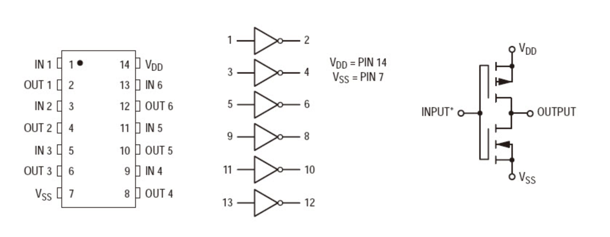
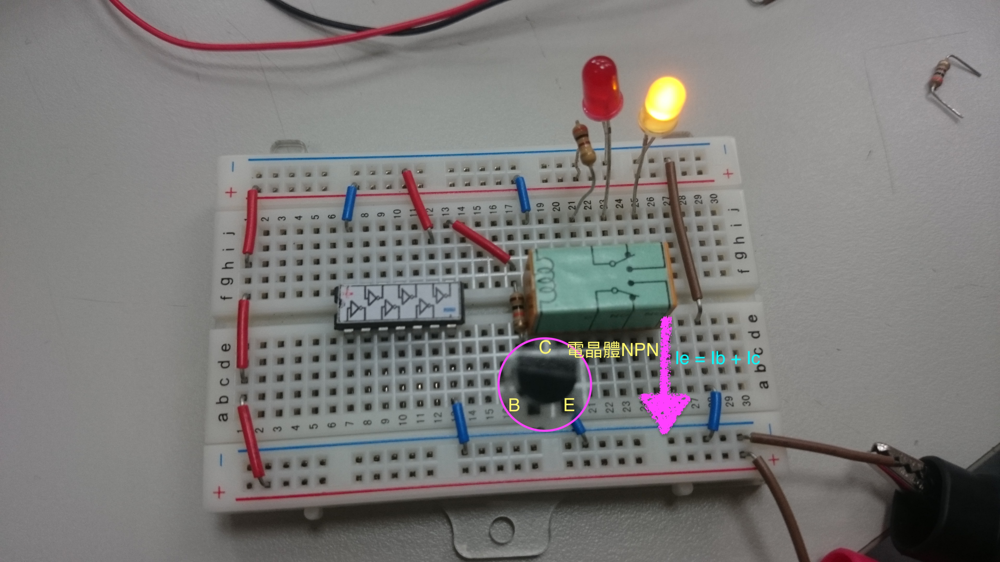

反相器4069初探
反向器技術資料

反向器功用
顧名思義，它可以將輸入資料做反相動作（0->1 / 1->0）
反向器實驗
輸入電壓與輸出電壓關係
首先，我們必須將電路先接好接著，就可以開啟電源來測試，以下是測試後資料
由實驗後的資料可以得知
我們輸入大概3V以上的時候
就會輸出0V
這也應證
電壓的範圍 通常分成3等分
所謂 高 （H）: 於2/3以上
所謂 低 （L） : 於1/3以下
所以在設計電路時 要小心不要有模棱兩可的地方出現！
另外
這也是一種「類比轉數位」的概念（通通變成0或1表示）
輸入電壓與輸出電流關係
這邊，我們直接把輸入改成簡單的5V（高電位）以及0V（低電位）
並且測量輸出後的電流
以下是測試後資料
接上燈泡
如果我們將輸出端改成接上燈泡
則我們會看到反相的結果
接上繼電器
如果接上繼電器當作線圈的控制區，我們會發現它一點也沒有作用
我們先介紹繼電器的特性
我們可以從此知道
繼電器的工作電壓要做切換大概要40mA
但是4069這顆IC輸出卻只有5.3mA
因此
我們必須要有「放大器」->電晶體來協助我們放大所需電流

輸出接上負載後的結果
如果IC輸出端接上負載後
則該輸出電壓則會不正確
因為 負載效應
負載效應
由於負載的變化而引起輸出穩定量的變化的效應稱為 負載效應
因為接上負載後
IC輸出就會有較大的電流產生
其內電阻將會作用 而會有壓降發生
故 工作電壓就會跟預設的不同！
心得
這次做了很多實驗，雖然我們在數位邏輯課程有學習到反相器的知識
但是上完了課才知道原來電壓與電流會隨著狀況而有不同工作指摽
然後也學習了加上繼電器的應用
我想我們真的需要好好學習
大二的應用電子學才有實力面對難題！
上課教材
謝謝您的支持！！
您的意見 是我改進的原動力
歡迎您將閱讀後的心得告訴我 讓我可以更加進步～～
chen.oscar@hotmail.com
資訊科學系 一年甲班 陳泰元